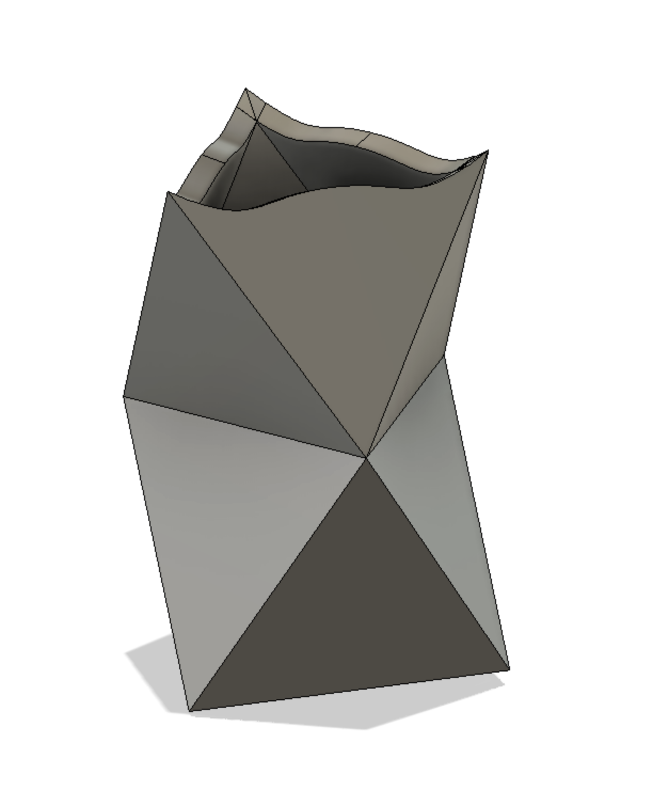
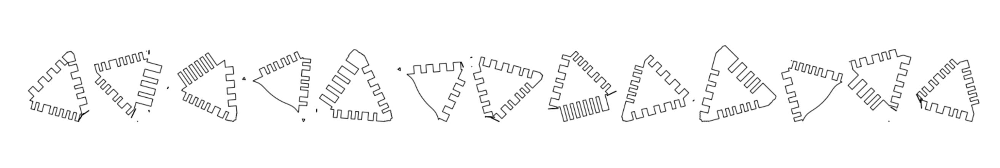
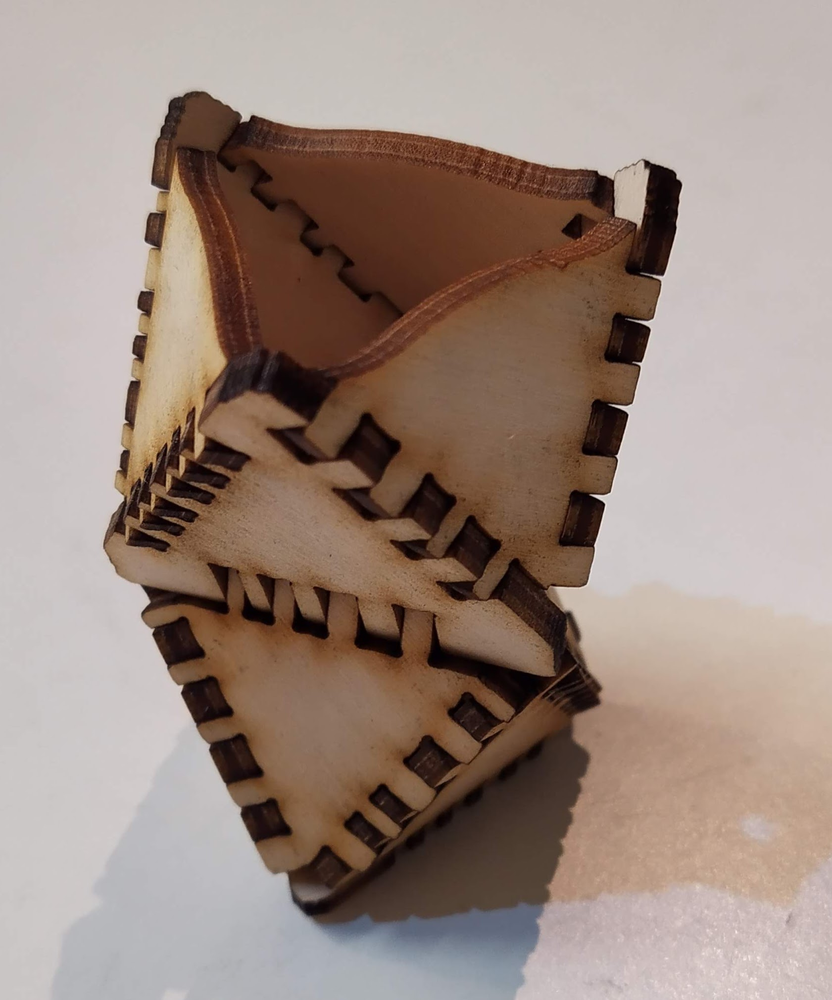
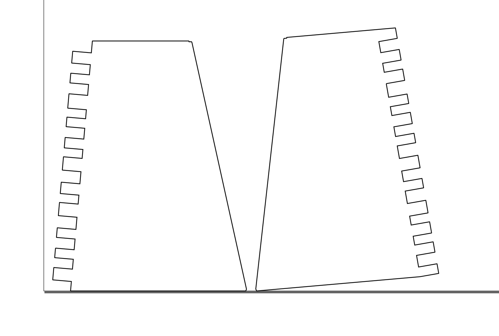

Plycutter - STL to finger-jointed DXF slicer
Author: Tuomas Lukka, tuomas@hipcode.fi
Introductory blog post with lots of pictures
Introduction

Plycutter is a program that takes a 3D model in an .stl file and
generates 2D .dxf files suitable for laser cutting, with generated
finger joints between material sheets where appropriate.
The 3D needs to be designed in a way where the sheets are clearly visible (e.g., using the CAD program's 'shell' command).
Example (images on the right): pen holder consisting of two stacked octahedra (scale model from 3mm plywood).
- Top: CAD model. The CAD model was designed as two
octahedra on top of each other and the 'shell' command
in the CAD program (Fusion 360) was used to produce
the shape consisting of sheets. A further cut on the top
was made to create the curved edges.
This model was then exported as a
.stl
 
-
Middle: Result of running plycutter on the
.stlfile to produce.dxffile for laser cutter. -
Bottom: the laser-cut plywood parts assembled. In cases where the vertical cuts from the laser cutter cannod exactly follow the model (such as the tips of the top triangle or the non-90-degree joints), plycutter tries to retain as much material as possible so that a quick sanding or filing operation will get the desired shape.
For non-90-degree joints, some gaps are unavoidable but a multitools and wood filler make quick work of those.
For more showcase images, see Plycutter summary PDF
Note Plycutter is alpha-stage software and probably contains many bugs. Please report any bugs as issues in the github project, preferably with a pull request with a failing test, or at least a minimal .stl file and command line for reproducing the problem.
Purpose / use cases
Plycutter is at its best for making one-off prototypes or small production runs, or for generative objects where each object is custom-generated from user input.
Unlike with 3D printers, the workspace is much larger (depending on the laser cutter used; with a little planning, it is also possible to make much larger objects than your laser cutter - only each sheet must fit).
The author has personally used it to iterate on some household object concepts, where it provides a fast and robust way (compared to 3D printing, for example) of iterating large objects.
Currently, the program generates the fingers somewhat randomly which makes it next to impossible to assemble the objects wrong and also makes them into interesting puzzles.
Installing plycutter
Installing dependencies
On a recent ubuntu, you can do the following.
sudo apt-get install libgeos-c1v5 libmpc-dev libspatialindex-dev
python -m pip install --upgrade pip
python -m pip install flake8 pytest
if [ -f requirements.txt ]; then pip install -r requirements.txt; fi
This is copied from the github test action so it should work ok.
On MacOS, the author uses conda to install the dependencies, see environment.yml.
Installing plycutter itself
Conventional method using setup.py
To install plycutter into your current python environment, run the command
python setup.py install
After this, running plycutter as a shell command should work
Using pipx
It is also possible to install plycutter and its dependencies via pipx.
pipx install git+https://github.com/tjltjl/plycutter.git
See the pipx dodumentation for details
Basic usage; Getting started
Install plycutter. Run the tests (pytest) to ensure all dependencies work.
Next, run the input file PlyTest0.1.stl which contains a very
simple object consisting of two sheets that meet at a corner.
We run plycutter from the command line using the following command:
plycutter -o foo.dxf --thickness 6 ./tests/data/PlyTest0.1.stl
which produces the output foo.dxf. You can open it in, e.g., Inkscape.
The following image shows the contents of such a file;
the lines on the left and on the bottom are Inkscape's paper edge.

Now it is possible to run this file in a laser cutter to obtain two pieces of e.g. plywood or acrylic that fit each other perfectly.
plycutter Command line options
usage: plycutter [-h] [--thickness THICKNESS]
[--min_finger_width MIN_FINGER_WIDTH]
[--max_finger_width MAX_FINGER_WIDTH]
[--support_radius SUPPORT_RADIUS] [--debug]
[--final_dilation FINAL_DILATION] [--random_seed RANDOM_SEED]
[--only_sheets ONLY_SHEETS] [-o OUTPUT_FILE]
infile
positional arguments:
infile STL file to process
optional arguments:
-h, --help show this help message and exit
--thickness THICKNESS
Set the thickness of sheets to find. (default: 6)
--min_finger_width MIN_FINGER_WIDTH
Set minimum width for generated fingers. (default: 3)
--max_finger_width MAX_FINGER_WIDTH
Set maximum width for generated fingers. (default: 5)
--support_radius SUPPORT_RADIUS
Set maximum range for generating material on a sheet
where neither surface is visible (default: 12)
--debug Turn on debugging. (default: False)
--final_dilation FINAL_DILATION
Final dilation (laser cutter kerf compensation)
(default: 1/20)
--random_seed RANDOM_SEED
Random seed for pseudo-random heuristics (default: 42)
--only_sheets ONLY_SHEETS
Not implemented yet (default: None)
-o OUTPUT_FILE, --output_file OUTPUT_FILE
File to write the DXF output in (default: None)
The most relevant known limitations
Plycutter is a hobby project, published in hope that it will be useful. Currently, the author (Tuomas Lukka) is in freelancer mode so feel free to contact the author to offer a consulting gig if there is a particular limitation you would like to see get worked on ASAP (or for other projects :) ).
-
For large models and models with many curves, plycutter is currently relatively slow. Even for small models, getting some speedup would be very welcome. The slowness is due to the exact 2D library that was written as a quick replacement to a commonly used off-the-shelf Python 2D library when it turned out that rounding errors from floats made it impossible to use in this work (the joint fingers are generated along linees and getting rounding errors that flip vertices' area were causing assertion failures). There are several badly scaling algorithms in plycutter's own 2D geometry library and those algorithms need to be replaced with faster ones. The ideal solutioin would be to replace the 2D library wth an external one that can do exact, rational geometry fast, but so far, I have not had success with this. The
Geom2DAPI has been kept simple for this reason. -
Shallow joints (between 135 and 180 degrees) are currently handled badly, with finger lengths becoming extreme. The system should understand when it does not make sense to make the fingers longer.
-
Long joints where more than 2 sheets meet are handled very rudimentarily and can produce unexpected results. Writing an algorithm that does better is fairly straightforward but hasn't been done yet. The function that makes the simplistic decisions is
heuristic_multi_inter_single_decisionsinplycutter/heuristics.py. -
For two sheets that cross each other in an "X" shape, plycutter will currently produce output that would only be assemblable in 4D. I.e. it will produce holes on both sheets that would fit together if it were possible to assemble the sheets. The real solution here is to allow plycutter to cut one of the sheets into parts but doing that correctly requires...
-
...buildability analysis. It is possible to make 2D patterns that cannot be assembled. For example, the two interlocking cubes example could have produced such a pattern but luckily did not.
-
Curved sheets are not yet supported (curved sheet edges work fine; of course they get subdivided into lines in the STL export). The architecture is should be fairly easy to extend in that direction: the
Sheet,InterandInterSideobjects are designed in a way that may make this easy. Representing theInterSideas a subdivided polygonal curve is probably the easiest approach to integrate with the currentGeom2Dcode. Naturally, the curved sheets should only be developable surfaces(Wikipedia) -
Currently, plycutter is not able to make use of the capabilities of 5-axis laser or water cutters or mills, mostly because the author has no access to such machines. If you are able to arrange such access, please get in touch. The biggest plus of 5 axes is that in non-90-degree joints, there will be no gaps or protruding parts. However, it gets better: 5 axes will enable a wide variety of joint shapes.
-
Milling or water cutting may require dog bone corners which are also not implemented for the above reason.
-
The joint pieces that belong together are not marked in any way currently. Adding a laser-carved number would be a great way to help the assembly process when there are many parts (for example, the dollhouse stairs were quite an interesting task to assemble...)